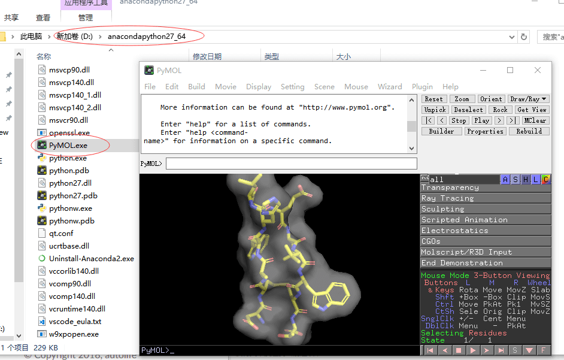

安装指南¶
安装PyMOL¶
PyMOL 现在由 SCHRODINGER 公司进行维护，可从官网直接购买PyMOL的可执行版本，或者下载试用版本。另外 UCI大学对PyMOL 源码进行了预编译，并免费提供PyMOL的相关wheel文件。
Windows 平台安装PyMOL¶
- 安装python
推荐anaconda版本的python2, 我的系统是64bit的windows系统,如果你的系统和我的系统相同，可以 点此 下载。
这里我在D盘根目录下面新建一个文件夹，anacondapython27_64，并双击+下一步的方式将anaconda 安装在 D:\anacondapython27_64 目录下面。
打开cmd 或者 powershell 窗口,运行D:\anacondapython27_64\python.exe -V 检查是否安装成功:
PS C:\Users\czq> D:\anacondapython27_64\python.exe -V
Python 2.7.15 :: Anaconda, Inc.
出现版本号则说明安装成功。
随着硬件的发展，32bit的系统逐渐被淘汰。
如果不幸你的电脑刚好是32bit的系统，可自行到 anaconda官网 选择对应的python版本进行下载。
- 下载相关的wheel文件
到 uci wheel官网 上下载相应的whl文。
我以64bit的windows+ conda python27 为例，选择相应的文件：
- numpy+mkl numpy‑1.14.6+mkl‑cp27‑cp27m‑win_amd64.whl
- pymol pymol‑2.1.0‑cp27‑cp27m‑win_amd64.whl
- pymol_launcher pymol_launcher‑2.1‑cp27‑cp27m‑win_amd64.whl
- 安装
将whl 文件放到d盘的根目录下，然后在cmd或者powershell窗口下运行下述命令就可以完成pymol的安装:
D:\anacondapython27_64\python.exe -m pip install D:/numpy-1.14.6+mkl-cp27-cp27m-win_amd64.whl
D:\anacondapython27_64\python.exe -m pip install d:/pymol‑2.1.0‑cp27‑cp27m‑win_amd64.whl
D:\anacondapython27_64\python.exe -m pip install D:/pymol_launcher-2.1-cp27-cp27m-win_amd64.whl
安装成功后，在D:\anacondapython27_64 目录下面会出现可执行程序PyMOL.exe, 双击就可以运行。
{kind=link}
Linux 平台安装¶
不推荐使用linux平台进行可视化。linux 安装PyMOL后，使得Python可以调用PyMOL模块执行批量处理 推荐安装anaconda python,然后通过 conda 命令安装就可以了。
MAC 平台安装¶
源码编译安装